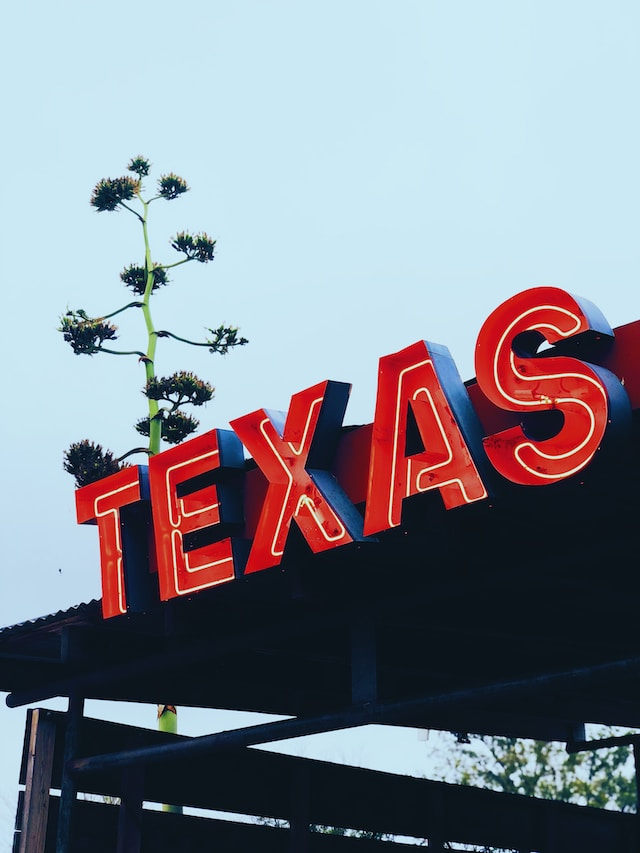
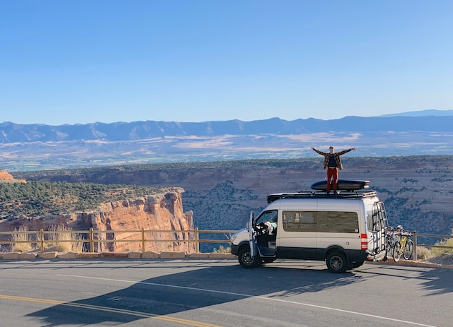

A Brief Overview of the Life of Rafi Griffin-Garcia

The world was graced by his presence on November 3rd, 1995.
Born in the city of Austin, Texas, Rafi grew up only knowing life in the big city
with a deep love for the outdoors, he loved going on camping trips and beach trips
with friends and family

He attended Texas State University and graduated with a degree in Business Administration
immediately after graduation, he took a seasonal job working in Yellowstone National Park
That summer, he realized he wanted to make van life his main goal in life, so he
began studying software engineering to get a remote job and make his dream become a reality!